Stetigkeit monoton und surjektiver Funktionen
1. Satz
Sei  eine surjektive und monotone Funktionen
Dann ist
eine surjektive und monotone Funktionen
Dann ist  stetig
stetig
2. Beweis
HÄ ?
Sei o.B.d.A. und monotone Funktionen
Sei 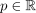 beliebig und sei 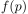 ein innerer Punkt des Intervalls 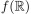, d.h. nimmt in  weder ein Minimum noch Maximum an.
Aufgrund der Surjektivität existiert zu
weder ein Minimum noch Maximum an.
Aufgrund der Surjektivität existiert zu  existiert ein 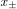 mit
existiert ein 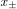 mit
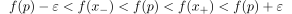
1
Damit existiert ein  mit: 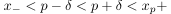
Es gilt dann für
mit: 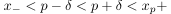
Es gilt dann für  mit 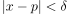
mit 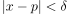
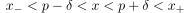
2
und auf Grund der monotonie folgt:
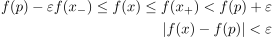
3
Das zeigt, dass stetig ist.
Falls Randpunkte von  sind, so verwendet man ein analoges argument mit der "hälfte" (+ dass aufgrund der monotonie kein verschiiedener
sind, so verwendet man ein analoges argument mit der "hälfte" (+ dass aufgrund der monotonie kein verschiiedener